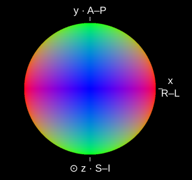
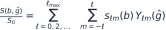

The Physics of Diffusion MRI: Interactive Phantom
Synthetic Brain Diffusion MRI Phantom
Explore how diffusion weighting and directional fiber architecture influence image contrast, then take the signal apart with spherical harmonics.
Diffusion-weighted signal

Voxel signal
Diffusion tensor · O(b)
b = 1,000 fit
fODF · CSD-derived
b = 3,000 · ℓ ≤ 6
Diffusion signal
S(g) / S₀ · selected shell
Default: axial view, matching the slice (R left, A up) · Drag any shape to rotate all three · R–L / A–P / S–I
Faster diffusion → lower signal. The tensor’s long axis and fODF peaks usually align with fibre directions, while diffusion-weighted signal is attenuated most strongly along them. The signal therefore has an opposite directional profile—not a mathematical reciprocal. A single tensor cannot resolve crossing fibres.
Signal across the three shells
Build the angular signal, one order at a time.
The isotropic term sets the mean. Higher even orders describe finer angular structure. The fODF stays fixed; this control truncates the signal reconstruction.
500 equal-area Fibonacci directions over the full sphere. Drag to rotate · arrow keys also rotate. Both surfaces share one radial scale. Radius = |S/S₀|; negative values appear in red.

What is being simulated? Data, model & limitations
One axial slice (slice 66, z = 10.5 mm) from Santiago Coelho’s HCP-derived BrainDiffusionPhantom, generated at 1.25 mm isotropic resolution. The browser loads the tissue labels, measured b₀ contrast, normalized MRtrix fODF coefficients through ℓ = 6, and response coefficients for b = 1,000, 2,000 and 3,000 s/mm². These are simulated shells, not uploaded raw HCP measurements.
White matter uses the phantom’s voxel-specific two-compartment Standard Model, including finite intra-axonal transverse diffusivity. Gray matter uses its anisotropic Kärger / NEXI forward kernel at Δ = 30 ms; CSF uses D = 3 µm²/ms. The same ARMNEXI-phantom response routines used by the source phantom generate all three shells. This forward path does not include the phantom’s optional soma maps.
fODF provenance: the original MRtrix image header records dwi2fod csd with response_b3000.txt and -lmax 6. The website does not rerun deconvolution. For this teaching slice, affected voxels retain their own fODF: all SH coefficients with ℓ > 0 are scaled by a single positive factor per voxel, while the ℓ = 0 term stays unchanged. This preserves angular peak directions and spherical means, while reducing anisotropy. No neighbouring coefficients are mixed in. The same repaired fODF generates all three shells. Tissue parameters and b₀ values are preserved. Signals are regenerated from the repaired coefficients, then tensors and color FA are refitted. The original source coefficients are retained separately. Tensor: a log-linear least-squares fit of −ln(S/S₀) = b gᵀDg to 500 simulated b = 1,000 directions, with S₀ fixed. This is a finite-b estimate of the O(b) log-signal model, not the exact b→0 limit. Samples outside 0 < S/S₀ ≤ 1 are excluded. Non-positive-definite fits are flagged instead of displayed. The tensor uses the selected voxel’s color FA RGB (principal direction weighted by FA) as its base colour. Matte surface lighting varies brightness while preserving this hue; the signal surface uses the same lighting. The default view matches the axial slice, with R on the left and A at the top. The ellipsoid maps a unit sphere through D (axis lengths proportional to its eigenvalues), independently scaled for visibility.
The normalized fODF P has integral 1. For orthonormal real SH, sℓm = 4π kℓ pℓm, where kℓ = ∫₀¹ K(b, ξ) Pℓ(ξ) dξ. SH conventions follow MRtrix3. Coefficients are in world RAS axes; the slice uses radiological display (right on the left).
The slice toggle switches between S/S₀ and S/S₀ multiplied by measured b₀ contrast (stored in fixed display units, scaled by its 99th percentile). Both use the same user-controlled display gain; it does not auto-normalize each shell. Spherical mean is the ℓ = 0 term. Glyphs are independently scaled to emphasize shape, and negative lobes are clipped only for glyph/image display. SH truncation or negative source fODF lobes can produce small nonphysical signal values; SH surfaces use absolute radius and mark negative values red; readouts retain their signs. No noise, motion, partial-volume model, or gradient nonlinearity is added. This is an educational prototype.